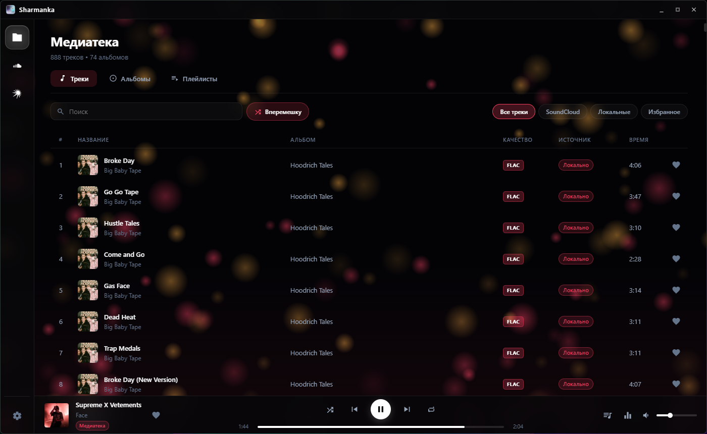
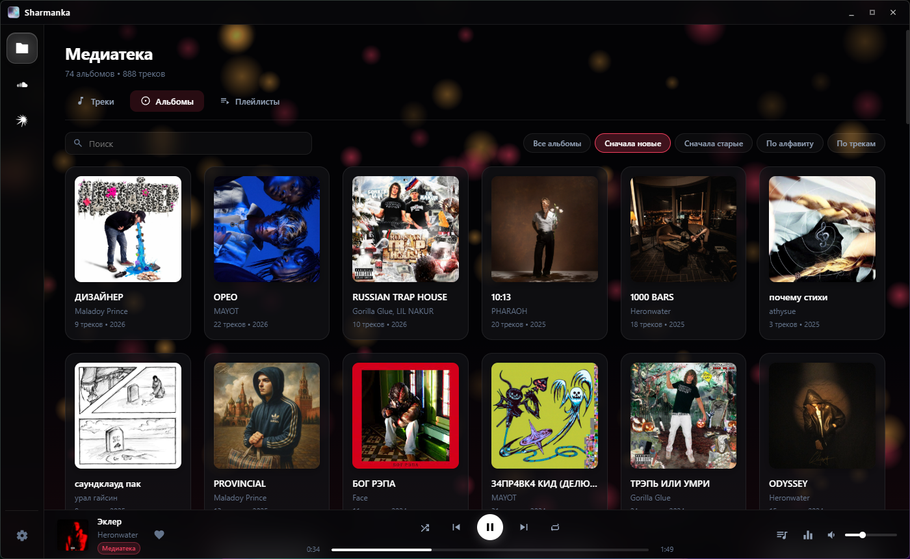
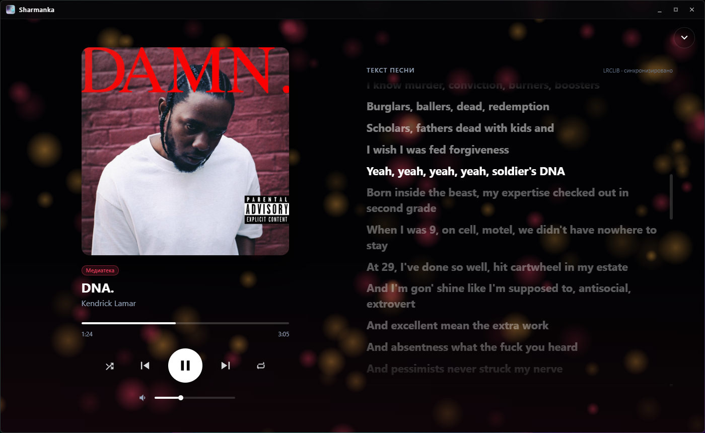
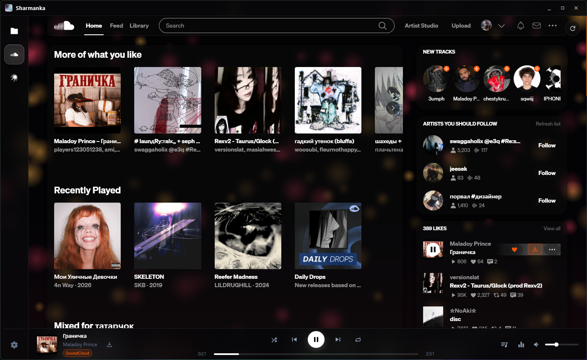
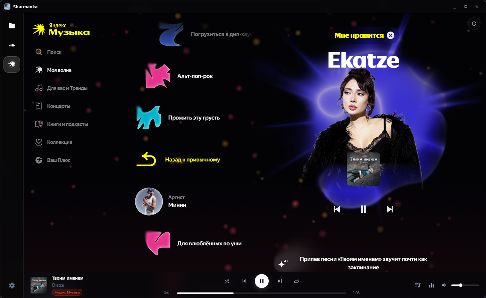
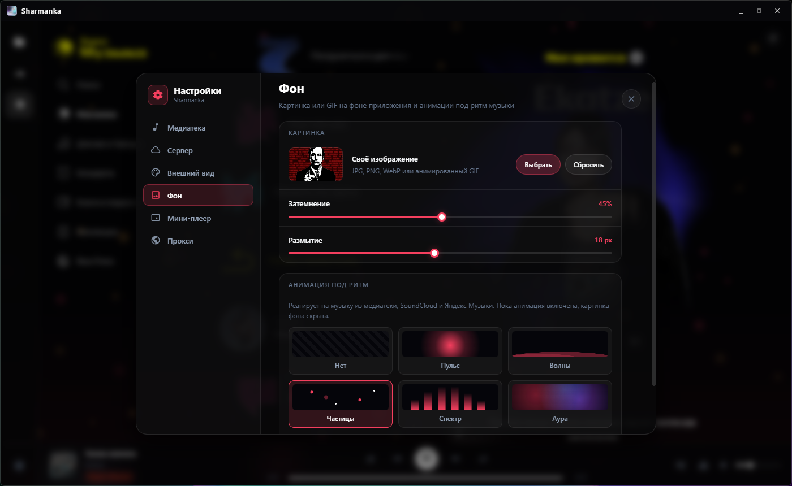
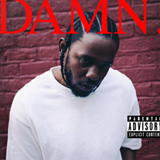
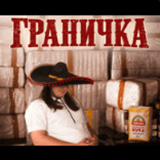
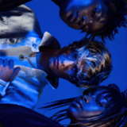
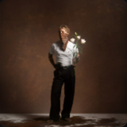

Локальная медиатека, SoundCloud и Яндекс Музыка в одном окне. Один плеер, одна очередь, один эквалайзер — и больше не нужно прыгать между вкладками и приложениями.

Тёмный интерфейс с «живым» фоном, который двигается под музыку. Цвет интерфейса можно выбрать свой или брать из обложки играющего трека.





Сервисы открываются прямо внутри Sharmanka, с вашим аккаунтом. Переключение — одним кликом в боковой панели, без перезагрузки и потери места в треке.
Что бы ни играло — трек с диска, SoundCloud или Яндекс Музыка — управление одно: нижняя панель, очередь, громкость и эквалайзер работают одинаково.

Укажите папки с музыкой — Sharmanka сама соберёт треки, альбомы и обложки. Видно качество каждого файла, есть избранное и свои плейлисты.
Нажмите на обложку в плеере — трек развернётся на весь экран. Текст подтягивается автоматически и синхронизируется с музыкой: текущая строка подсвечивается.
Поставьте свою картинку или анимированный GIF, настройте затемнение и размытие. Или включите анимацию, которая реагирует на ритм: пульс, волны, частицы, спектр или ауру.
Работает для всех источников сразу — и для файлов, и для SoundCloud, и для Яндекс Музыки. Готовые пресеты или своя настройка. Попробуйте:
Кнопка загрузки прямо в плеере и в списках треков. Скачанный трек сразу появляется в вашей медиатеке.



Сверните Sharmanka — в углу экрана появится компактный плеер: пауза и переключение треков, не отвлекаясь от игры или работы. Клик по обложке возвращает приложение. Можно выбрать угол и монитор.
Подключите папку с сервера по WebDAV — например, через rclone. Треки играют по сети, без копирования на компьютер. Сервер может стоять дома или где угодно в интернете.
Очередь показывает, что играло до этого и что будет дальше — для медиатеки, SoundCloud и Яндекс Музыки. «Вперемешку» в один клик.
Интерфейс перекрашивается под обложку играющего трека. Не нравится — выключите и выберите свой акцент.
Если сервис недоступен в вашей сети — задайте прокси отдельно для SoundCloud или Яндекс Музыки и проверьте его одной кнопкой.
Бесплатно. Для Windows 10 и 11 (64-бит).
Если Windows покажет предупреждение SmartScreen — нажмите «Подробнее» → «Выполнить в любом случае».
Да, Sharmanka бесплатна. Для полных треков в Яндекс Музыке может понадобиться ваша подписка — приложение открывает сервис с вашим собственным аккаунтом.
Для медиатеки — нет. Сервисы работают так же, как в браузере: без входа доступно то, что сервис показывает гостям, а после входа — ваши лайки, плейлисты и рекомендации. Вход сохраняется между запусками.
Распространённые аудиоформаты, включая FLAC и MP3. У каждого трека видно его качество: FLAC или MP3 с битрейтом.
В настройках есть раздел «Сервер»: укажите адрес WebDAV-папки, логин и пароль. Подойдёт, например, rclone serve webdav на домашнем сервере или NAS. Сервер может быть и удалённым — главное, чтобы он был доступен по сети.
Пока Sharmanka работает только на Windows 10 и 11.
Локально на вашем компьютере, в папке профиля Windows (AppData). Пароль от сервера хранится в зашифрованном виде средствами системы.